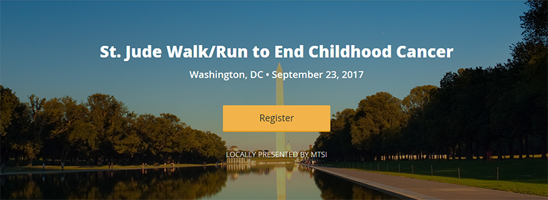

iTalkBB蜻蜓連續5年助力St. Jude Children's Hospital！每次愛心，都有你的一份！
9月是全美兒童癌症關注月，St. Jude Children's Hospital每年在這一時間會發起 “Walk/Run to End Childhood Cancer”活動，屆時全美58個城市會有上萬人，走出家門，與家人和朋友一起參與活動。
華盛頓地區2017年St. Jude慈善遊行在9月23日Nationals Park圓滿舉辦。而這是一場慈善與娛樂相結合的活動，所有參與者可以即可以獻愛心，又可以在活動中獲得無限樂趣！
作為全美最大的為患癌兒童提供治療的非營利醫院，St.Jude無償收治來自全美50個州和世界各地的患癌兒童。同時為了提高世界各地罹患癌症和其他先天性疾病的兒童存活率，St.Jude國際拓展項目在17個國家建立了24個官方合作站，將愛心散播到更遠的地方。

而iTalkBB蜻蜓做為St. Jude的贊助商，除了長期為兒童癌症患者提供善款之外，iTalkBB蜻蜓已經連續5年參與"St. Jude Walk/Run to End Childhood Cancer"慈善遊行。在未來，iTalkBB蜻蜓也將一如既往支持慈善事業，發揚“We Love, We Care”的精神，與St. Jude一起召喚人們對兒童癌症的重視，為兒童患者獻出一點愛心。

2017 iTalkBB蜻蜓助力St Jude慈善遊行

iTalkBB蜻蜓員工及其家人熱情參與活動

2017 iTalkBB蜻蜓此次慈善遊行的文化衫設計
Why St. Jude? Why It Matters?
St. Jude作為全美排名第一的兒童癌症醫院，一直為抗擊兒童癌症做出卓越的貢獻。所有入住St. Jude的兒童患者，所有醫療費用全部免費。St. Jude甚至為兒童患者和其家屬免費提供住食宿和交通，以方便家屬陪伴自己的孩子。
自從St. Jude成立50多年以來，St. Jude出色的醫療服務把兒童癌症治癒的成功率從20%提高到80%以上！每年都有更多的兒童和家庭被St. Jude拯救！

作為一個非盈利的慈善醫院，在堅持為癌症兒童患者提供免費醫療服務的St. Jude，其所有醫療和運營費用的75%都來自於社會的資助和捐款。
所以，自發性的捐款和吸引更多人為St. Jude捐款，這對St. Jude和其救治的兒童癌症患者尤為重要。
而每年的慈善遊行讓更多人了解癌症給兒童和壹個家庭造成的毀滅性打擊，讓更多人投入到對抗兒童癌症的戰役中來，消除比癌症更可怕的無知和冷漠。
而致力於“為海外華人打造美好生活”的iTalkBB蜻蜓在與St. Jude合作時，一直積極鼓勵員工自發捐款，並參與慈善遊行充當志願者，身體力行為抗擊癌症風險一份自己的力量。
iTalkBB蜻蜓每一位員工都堅信“Together, We Make a Difference”。作為iTalkBB蜻蜓大家庭的一員，當我們凝聚在一起時，讓我們創造改變，合力幫助更多兒童癌症患者、康復者及其家人創造更美好的人生。
Together, We Make a Difference!
2017 iTalkBB蜻蜓志願者代表團

2015 iTalkBB蜻蜓志願者代表團

2014 iTalkBB蜻蜓志願者代表團

2013 iTalkBB蜻蜓志願者代表團
除了充當志願者之外，iTalkBB蜻蜓特地為St. Jude設立捐款頁面。短短的幾天內，善款的總數目已經達到$1,112，而這個數目還在持續不斷的增加。
癌症，這個詞也許離你很遠。但能夠為抗擊癌症做出一點貢獻的機會，卻離我們很近！
iTalkBB蜻蜓，在未來將始終走在這條公益的道路上，一如既往，為愛前行。